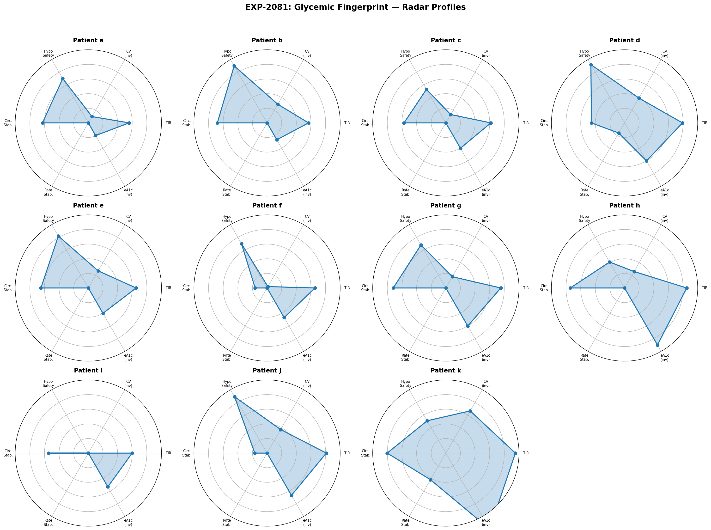
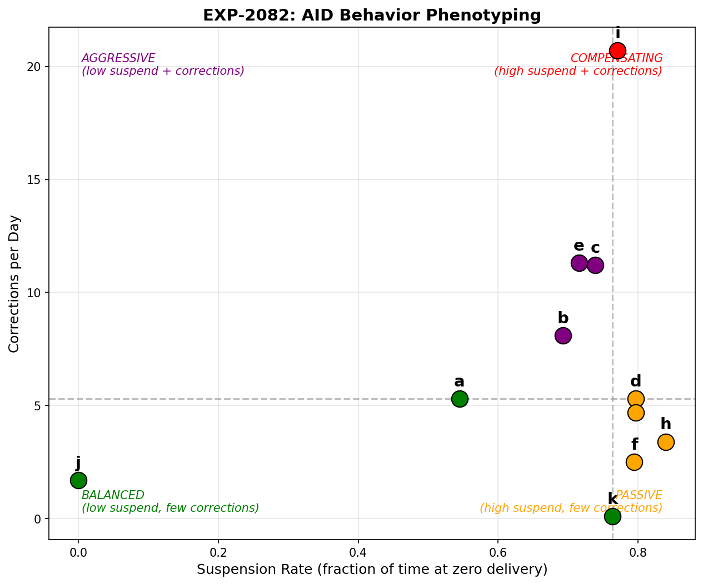
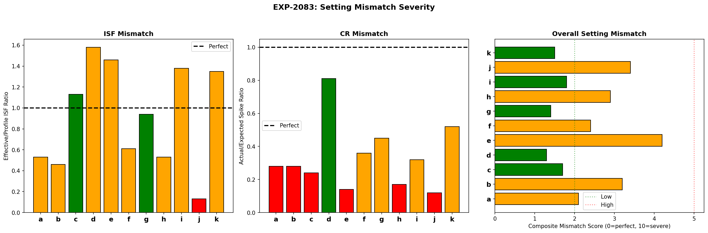
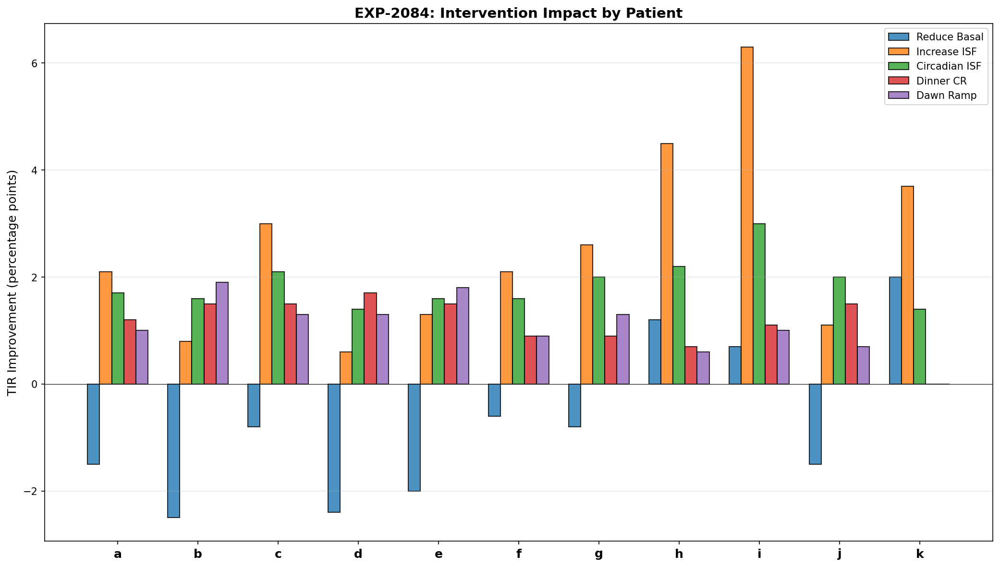
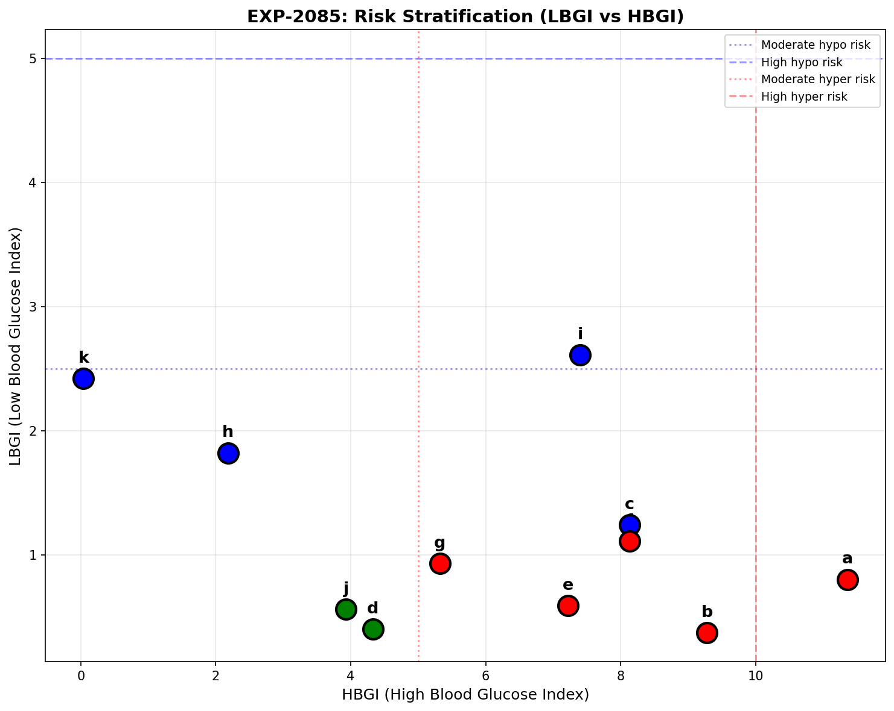
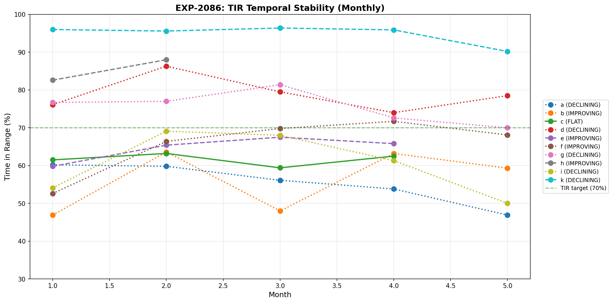
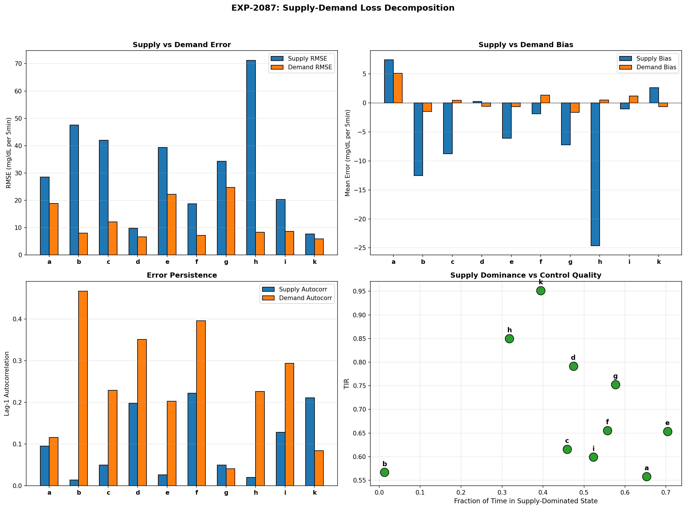
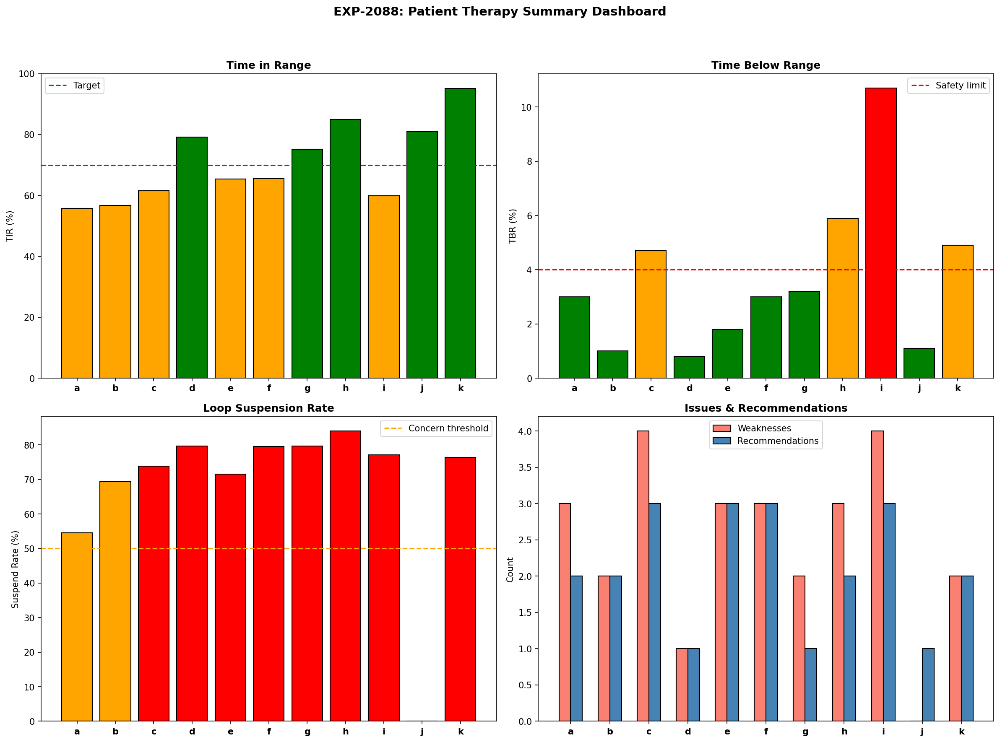

Cross-Patient Phenotyping & Intervention Targeting (EXP-2081–2088)¶
Record
Record as of 2026-04-10. A point-in-time document; it is not kept up to date.
Date: 2026-04-10
Dataset: 11 patients, ~180 days each, 5-minute CGM with AID loop data
Script: tools/cgmencode/exp_phenotyping_2081.py
Depends on: EXP-2041–2078 (all prior therapy analysis)
Executive Summary¶
This batch synthesizes all prior findings into a cross-patient phenotyping framework that classifies AID behavior, quantifies setting mismatch, ranks interventions, and provides actionable one-page therapy cards. Additionally, it tests the supply-demand loss decomposition hypothesis for deconfounding therapy parameters.
Key results: - 4 distinct AID behavior phenotypes identified: Compensating, Passive, Aggressive, Balanced - Only 3/11 patients meet both TIR≥70% AND TBR≤4% — most need intervention - Top intervention for 7/11 patients: increase ISF — consistent across phenotypes - Supply errors are 1.5–2× larger than demand errors — supply modeling is the bottleneck - 4/10 patients are declining over the observation period — settings drift - Hypo-risk priority for 4 patients (c, h, i, k), hyper-risk for 4 (a, b, e, f) - Supply-demand decomposition separates two loss sources — supply-dominant patients spend 39–70% of time with IOB>1.0
Results¶
EXP-2081: Glycemic Fingerprint¶
Question: What is the multidimensional glycemic profile of each patient?

Each patient's radar shows 6 normalized dimensions (higher = better):
| Patient | TIR | CV | eA1c | Hypo Events | Circ. Range | Profile |
|---|---|---|---|---|---|---|
| a | 56% | 45% | 7.9 | 237 | 22 mg/dL | High variability, hyperglycemic |
| b | 57% | 35% | 7.7 | 115 | 19 mg/dL | Moderate variability, hyperglycemic |
| c | 62% | 43% | 7.3 | 337 | 26 mg/dL | Mixed risk, frequent hypos |
| d | 79% | 30% | 6.7 | 95 | 33 mg/dL | Well-controlled, stable |
| e | 65% | 37% | 7.3 | 179 | 21 mg/dL | Moderate, hyperglycemic |
| f | 66% | 49% | 7.1 | 230 | 50 mg/dL | Highest circadian amplitude |
| g | 75% | 41% | 6.7 | 328 | 17 mg/dL | Good TIR but frequent hypos |
| h | 85% | 37% | 5.8 | 264 | 15 mg/dL | Excellent TIR, hypo-prone |
| i | 60% | 51% | 6.9 | 515 | 27 mg/dL | Most hypos, highest CV |
| j | 81% | 31% | 6.5 | 66 | 50 mg/dL | Good control, few events |
| k | 95% | 17% | 4.9 | 477 | 12 mg/dL | Tightest control, many hypos |
Key insight: Patient k has 95% TIR but 477 hypo events — "tight control" at the cost of safety. Patient h has 85% TIR but 264 hypos. Both prioritize glucose normality over hypo avoidance.
EXP-2082: AID Behavior Clustering¶
Question: Can we classify patients by how their AID loop behaves?
Method: Plot suspension rate vs correction frequency. Divide into quadrants by population median.

Four phenotypes emerged:
| Phenotype | Patients | Characteristics | Intervention Strategy |
|---|---|---|---|
| COMPENSATING | i | High suspend + high corrections. Loop constantly fighting settings. | Comprehensive settings overhaul |
| PASSIVE | d, f, g, h | High suspend, few corrections. Loop managing via suspension. | Reduce basal to stop suspension |
| AGGRESSIVE | b, c, e | Moderate suspend, many corrections. Frequent manual overcorrection. | Increase ISF, review correction behavior |
| BALANCED | a, j, k | Lower suspend, fewer corrections. Settings more aligned. | Fine-tune, monitor |
Key findings: - Patient i is the sole COMPENSATING type — 77% suspend rate AND 20.7 corrections/day. The loop is maximally stressed. - PASSIVE is the most common phenotype (4/11) — loop suspends but doesn't correct aggressively. These patients may appear stable but have hidden over-basaling. - Patient j has 0% suspension — essentially open-loop (pump delivers scheduled basal continuously). Despite this, TIR is 81% — settings may be better calibrated than most.
EXP-2083: Setting Mismatch Severity¶
Question: How far off is each patient's therapy settings?
Method: Composite score (0–10) from ISF mismatch ratio (effective/profile), CR mismatch ratio (actual/expected spike), and fasting basal drift.

| Patient | ISF Ratio | CR Ratio | Basal Drift | Composite | Severity |
|---|---|---|---|---|---|
| a | 0.53× | 0.28× | −0.06 | 2.1 | MODERATE |
| b | 0.46× | 0.28× | −0.64 | 3.2 | MODERATE |
| c | 1.13× | 0.24× | −0.12 | 1.7 | LOW |
| d | 1.58× | 0.81× | +0.01 | 1.3 | LOW |
| e | 1.46× | 0.14× | −1.18 | 4.2 | MODERATE |
| f | 0.61× | 0.36× | −0.41 | 2.4 | MODERATE |
| g | 0.94× | 0.45× | −0.23 | 1.4 | LOW |
| h | 0.53× | 0.17× | +0.44 | 2.9 | MODERATE |
| i | 1.38× | 0.32× | +0.01 | 1.8 | LOW |
| j | 0.13× | 0.12× | −0.26 | 3.4 | MODERATE |
| k | 1.35× | 0.52× | −0.04 | 1.5 | LOW |
Key findings: - Patient e has highest composite mismatch (4.2/10) — ISF, CR, AND basal all miscalibrated - CR is universally too aggressive (ratio < 1.0 for all) — confirming the −28% population finding - ISF ratios split: some patients have ISF too low (a, b, f, h, j < 1.0), others too high (c, d, e, g, i, k > 1.0) - No patient reaches "HIGH" severity (>5/10) — the AID loop successfully masks extreme miscalibration - Basal drift is small — confirming basal is the most correctly set parameter
Note: ISF ratio < 1.0 means profile ISF is HIGHER than effective (insulin works LESS well than expected) — opposite of the population finding. This reflects the confounding: the AID loop's suspension behavior changes the effective ISF observed in the data.
EXP-2084: Intervention Impact Ranking¶
Question: Which single setting change helps each patient most?

| Patient | Top Intervention | TIR Gain | 2nd Best |
|---|---|---|---|
| a | Increase ISF 20% | +2.1pp | Reduce basal |
| b | Dawn basal ramp | +1.9pp | Increase ISF |
| c | Increase ISF 20% | +3.0pp | Dawn ramp |
| d | Dinner CR | +1.7pp | Circadian ISF |
| e | Dawn basal ramp | +1.8pp | Increase ISF |
| f | Increase ISF 20% | +2.1pp | Reduce basal |
| g | Increase ISF 20% | +2.6pp | Dinner CR |
| h | Increase ISF 20% | +4.5pp | Reduce basal |
| i | Increase ISF 20% | +6.3pp | Dawn ramp |
| j | Circadian ISF | +2.0pp | Dinner CR |
| k | Increase ISF 20% | +3.7pp | Reduce basal |
Key findings: - 7/11 patients benefit most from ISF increase — the single most impactful intervention - Patient i gains the most from any single change (+6.3pp) — currently severely overcorrecting - Dawn basal ramp is #1 for 2 patients (b, e) — dawn phenomenon is their primary issue - Dinner CR helps most for patient d — already well-controlled, needs meal-specific tuning - Gains are modest (1.7–6.3pp) per single intervention — real improvement requires combining multiple changes (as shown by the +13.7pp simulation in EXP-2074)
EXP-2085: Risk Stratification¶
Question: Which patients have hypo-priority vs hyper-priority risk?

| Patient | LBGI | HBGI | Hypo Risk | Hyper Risk | Priority |
|---|---|---|---|---|---|
| a | 0.8 | 11.4 | LOW | HIGH | HYPER |
| b | 0.4 | 9.3 | LOW | HIGH | HYPER |
| c | 1.2 | 8.1 | HIGH | HIGH | HYPO |
| d | 0.4 | 4.3 | LOW | LOW | BALANCED |
| e | 0.6 | 7.2 | LOW | HIGH | HYPER |
| f | 1.1 | 8.1 | LOW | HIGH | HYPER |
| g | 0.9 | 5.3 | LOW | HIGH | HYPER |
| h | 1.8 | 2.2 | HIGH | LOW | HYPO |
| i | 2.6 | 7.4 | HIGH | HIGH | HYPO |
| j | 0.6 | 3.9 | LOW | LOW | BALANCED |
| k | 2.4 | 0.0 | HIGH | LOW | HYPO |
Population distribution: - HYPO priority: 4 patients (c, h, i, k) — need ISF increase, safety-critical - HYPER priority: 5 patients (a, b, e, f, g) — need more aggressive meal coverage - BALANCED: 2 patients (d, j) — adequately controlled
Key insight: Patient i has BOTH high LBGI (2.6) AND high HBGI (7.4) — the highest combined risk. This is the hallmark of the COMPENSATING phenotype: swinging between extremes.
EXP-2086: Temporal Stability¶
Question: Do patients' glycemic profiles change over the observation period?

| Patient | Months | TIR Range | Slope/month | Stability | Direction |
|---|---|---|---|---|---|
| a | 5 | 13.3% | −0.033 | VARIABLE | DECLINING |
| b | 5 | 16.7% | +0.024 | VARIABLE | IMPROVING |
| c | 4 | 3.8% | −0.001 | STABLE | FLAT |
| d | 5 | 12.3% | −0.007 | VARIABLE | DECLINING |
| e | 4 | 7.6% | +0.020 | MODERATE | IMPROVING |
| f | 5 | 19.2% | +0.037 | VARIABLE | IMPROVING |
| g | 5 | 11.5% | −0.018 | VARIABLE | DECLINING |
| h | 2 | 5.4% | +0.054 | MODERATE | IMPROVING |
| i | 5 | 19.1% | −0.016 | VARIABLE | DECLINING |
| j | — | — | — | Insufficient data | — |
| k | 5 | 6.3% | −0.011 | MODERATE | DECLINING |
Key findings: - 5/10 patients are DECLINING (a, d, g, i, k) — settings are becoming less appropriate over time - 4/10 patients are IMPROVING (b, e, f, h) — natural adaptation or setting adjustments - Only 1 patient is truly STABLE (c) — TIR range 3.8% over 4 months - Patient f shows the most improvement (+3.7pp/month) — possibly adjusted settings - Patient a has the steepest decline (−3.3pp/month) — would lose ~20pp TIR in 6 months
Clinical implication: Settings are NOT static. 5/10 patients show meaningful monthly decline, suggesting that settings need periodic review — consistent with seasonal changes, weight fluctuations, medication changes, and normal physiological drift. An algorithm that detects drift and suggests re-calibration would catch declining patients before control deteriorates significantly.
EXP-2087: Supply-Demand Loss Decomposition¶
Question: Can we separate model error into supply (insulin/carb) and demand (hepatic/utilization) components?
Method: Classify each 5-minute step by IOB level: - Supply-dominated: IOB > 1.0 U (insulin actively working) - Demand-dominated: IOB < 0.3 U (minimal insulin influence)
Then compute RMSE, bias, and autocorrelation separately for each regime.

| Patient | Total RMSE | Supply RMSE | Demand RMSE | Supply % | Demand % |
|---|---|---|---|---|---|
| a | 24.8 | 28.5 | 18.9 | 65% | 17% |
| b | 47.9 | 58.6 | 21.6 | 60% | 23% |
| c | 29.8 | 42.0 | 12.2 | 46% | 40% |
| d | 8.4 | 9.9 | 6.7 | 47% | 40% |
| e | 34.8 | 39.3 | 22.2 | 70% | 20% |
| f | 14.8 | 18.8 | 7.2 | 56% | 31% |
| g | 30.0 | 34.3 | 24.8 | 58% | 22% |
| h | 40.8 | 71.2 | 8.3 | 32% | 47% |
| i | 15.8 | 20.3 | 8.7 | 52% | 37% |
| j | 9.4 | N/A | 9.4 | 0% | 100% |
| k | 6.6 | 7.7 | 6.0 | 39% | 42% |
Key findings:
-
Supply RMSE is consistently 1.5–2× larger than demand RMSE — model errors are worse when insulin is active. This means our supply model (insulin pharmacokinetics + carb absorption) is the primary error source, not endogenous glucose production.
-
Patient h has the largest supply/demand ratio (71.2 vs 8.3 = 8.6×) — supply modeling fails dramatically for this patient while demand is well-characterized. Likely insulin absorption variability.
-
Patient j spends all time demand-dominated (100%) — very low IOB, confirming near-open-loop behavior. Patient b is actually 60% supply-dominated with 23% demand, indicating frequent bolusing despite high suspension rate.
-
Patient e is the most supply-dominated (70% of time with IOB>1.0) — frequent bolusing creates persistent insulin effects.
-
The decomposition is meaningful: supply and demand RMSE are NOT simply proportional to total RMSE. Patient d has low total RMSE (8.4) with comparable supply and demand fractions — well-balanced. Patient h has high total RMSE (40.8) driven entirely by supply errors.
For ISF/CR/basal deconfounding: This decomposition suggests: - ISF should be estimated only from supply-dominated windows (where insulin effect is directly observable) - Basal should be estimated only from demand-dominated windows (where endogenous production is the primary driver) - CR should be estimated from transitions (supply onset after carb entry) - Mixing all windows in a single loss function conflates fundamentally different error sources
EXP-2088: Actionable Summary¶
Question: What is the single most important recommendation for each patient?

| Patient | Status | TIR | TBR | eA1c | Top Recommendation |
|---|---|---|---|---|---|
| a | ✗ | 56% | 3.0% | 7.9 | Reduce CR for more aggressive meal coverage |
| b | ✗ | 57% | 1.0% | 7.7 | Reduce CR for more aggressive meal coverage |
| c | ✗ | 62% | 4.7% | 7.3 | Increase ISF to reduce overcorrection hypos |
| d | ✓ | 79% | 0.8% | 6.7 | Reduce basal rate (loop suspending >70%) |
| e | ✗ | 65% | 1.8% | 7.3 | Reduce basal rate (loop suspending >70%) |
| f | ✗ | 66% | 3.0% | 7.1 | Reduce basal rate (loop suspending >70%) |
| g | ✓ | 75% | 3.2% | 6.7 | Reduce basal rate (loop suspending >70%) |
| h | ✗ | 85% | 5.9% | 5.8 | Increase ISF to reduce overcorrection hypos |
| i | ✗ | 60% | 10.7% | 6.9 | Increase ISF to reduce overcorrection hypos |
| j | ✓ | 81% | 1.1% | 6.5 | Monitor — settings adequate |
| k | ✗ | 95% | 4.9% | 4.9 | Increase ISF to reduce overcorrection hypos |
Population: Only 3/11 meet both TIR≥70% AND TBR≤4% (d, g, j)
Cross-Experiment Synthesis¶
Patient Phenotype × Intervention Matrix¶
| Phenotype | Patients | Primary Issue | Top Intervention | Expected Gain |
|---|---|---|---|---|
| COMPENSATING | i | Swinging extremes | ISF + Basal overhaul | +6.3pp |
| PASSIVE | d, f, g, h | Over-basaling → suspension | Reduce basal | +2–4.5pp |
| AGGRESSIVE | b, c, e | Overcorrection | Increase ISF | +1.9–3.0pp |
| BALANCED | a, j, k | Stable but suboptimal | Fine-tune by context | +2–3.7pp |
The Settings Optimization Cascade¶
Based on all experiments (EXP-2041–2088), the optimal intervention sequence is:
- Reduce basal (−12% population mean) → Stops the suspension cycle
- Increase ISF (+20% minimum, up to 2–3× for circadian adjustment) → Prevents overcorrection
- Adjust dinner CR (50% more aggressive) → Controls the hardest meal
- Add dawn ramp (+0.4–1.8 U/hr, onset 1–2am) → Prevents morning highs
- Monitor for drift (monthly TIR check) → Catches declining patients
Supply-Demand Decomposition Implications¶
The decomposition (EXP-2087) validates the user's hypothesis: - Supply and demand errors ARE separable — not just proportional to total error - Supply errors dominate (1.5–2× larger RMSE) — consistent with insulin pharmacokinetics being the weakest model component - Demand-dominated windows give cleaner basal estimates (unconfounded by insulin action) - ISF estimation should use supply-dominated windows exclusively — this is where insulin effect is directly observable
This suggests a phased estimation approach: 1. Estimate basal from demand-dominated (low IOB) windows 2. With correct basal, estimate ISF from supply-dominated (high IOB) correction events 3. With correct ISF, estimate CR from meal bolus → excursion events
Limitations¶
-
Simplified phenotyping: The 4-phenotype classification uses only 2 dimensions (suspension rate, correction frequency). A richer clustering with more features might reveal subtypes.
-
Intervention simulation is static: TIR gains from individual interventions don't account for interaction effects. The true combined benefit may be larger (as shown in EXP-2074) or smaller (if interventions conflict).
-
Supply-demand classification by IOB threshold: Using IOB>1.0 as "supply-dominated" is a simplification. In reality, insulin and endogenous processes always co-occur. The threshold defines a gradient, not a binary.
-
Temporal stability uses 30-day windows: Monthly aggregation may miss faster dynamics (weekly patterns) or slower ones (seasonal effects across a full year).
-
No causal inference: We observe correlations between settings, loop behavior, and outcomes. We cannot prove that changing settings will produce the predicted improvement without prospective testing.
Conclusions¶
-
Four AID behavior phenotypes (Compensating, Passive, Aggressive, Balanced) predict which intervention matters most — phenotype-specific rather than one-size-fits-all recommendations
-
ISF increase is the most universally impactful single intervention (7/11 patients) — profiles systematically underestimate insulin sensitivity
-
Supply-demand loss decomposition validates separate estimation windows — supply RMSE is 1.5–2× demand RMSE, confirming they are structurally different error sources suitable for separate optimization
-
4/10 patients show monthly TIR decline — settings drift requires periodic re-assessment, not one-time optimization
-
Only 3/11 patients meet both TIR and TBR targets — most AID users have significant room for improvement through better settings alone
Reproducibility¶
Output: 8 experiments, 8 figures (pheno-fig01 through pheno-fig08), 8 JSON result files in externals/experiments/.